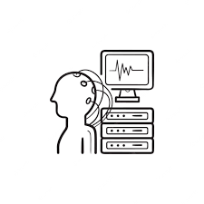

Neuronas
Las controlan nuestra información. Aunque hay neuronas muy distintas, tienen por lo general tres partes:
- Una dendrita que recibe una señal
- Un soma calcula la informacion
- Un axón envía la señal a otra neurona
¿Cómo?
Hay neuronas encargadas de no recopilar informacion sobre lo que vemos sentimos tocamos o pensamos.
Despues a traves del uso de electrodos podemos captar acciones y a traves de hacer esto en varias nueronas a la vez somos capaces de decodificar el significado de estos pensamientos.
El dispositivo
Es un diseño de orcenador cerebral totalmente invisible constaria de una serie de hilos conectados con neuronas esecificas del cerebro para asi leer la informacion que circula por estas.
La cirugia mediante la cual se instalan es relativamente simple y puede ser desarrollada mor un ser humano.
Objetivo
Aunque este invento puede ser utiizado en muchos campos distintos se esta diseñano con un enfoque social con la intencion de brindar a gente con distintos tipos de paralisis la oportunidad de interactuar con diversas tecologias ya puede ser un comun telefono/ordenador u otros dispositivos mas complejos que les faciliten la movilidad